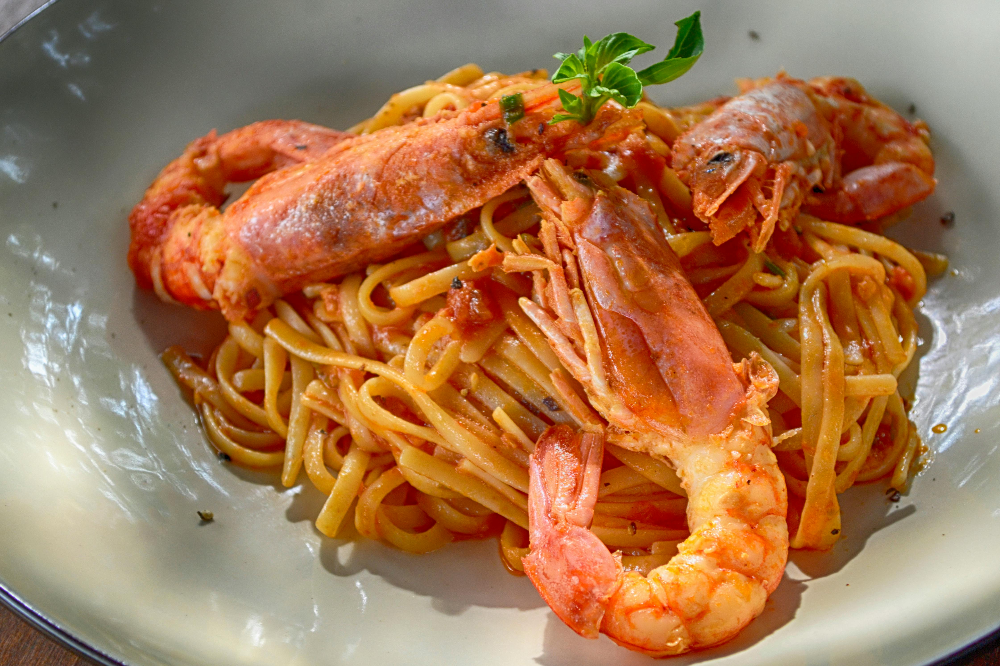

Pepperoni pizza
Pepperoni is a classic pizza option and is one of the most well-loved pizzas for a reason – something about the combination of pepperoni, tomato sauce and cheese creates a flavour sensation unlike anything else. read more

burger
Juicy, big, loaded with toppings of my choice. High quality beef medium to well with cheese and bacon on a multigrain bun. A huge single burger with all the fixings, cheese, lettuce, tomato, onions and special sauce or mayonnaise. read more

Veg Pizza
It’s fresh and full of flavor, featuring cherry tomatoes, artichoke, bell pepper, olives, red onion and some hidden (and optional) baby spinach. You’ll find a base of rich tomato sauce and golden, bubbling mozzarella underneath, of course. read more

Ribs
Oven barbecue ribs slathered in the most delicious sticky barbecue sauce with a kick of garlic with vegtables on the side as well as our signature fresh potatoes. read more

Linguine allo scoglio
One of Italy's all-time favorites, linguine allo scoglio, often also dubbed linguine ai frutti di mare is a typical southern Italian seafood dish or piatto di mare. Back in the 1980s in the wider Neapolitan area, as well as along the entire southern Italian coast, there was reportedly not a single restaurant that didn't offer some version of such a timeless classic on its menu. read more

Pappardelle al cinghiale
Pappardelle is a famous Tuscan pasta variety. When paired with ragù di cinghiale (made with wild boar), they become one of the region's best gastronomic experiences. Unlike classic ragù, the one prepared with wild boar has an intense, much stronger flavor achieved by long, slow simmering in a rich sauce of tomatoes and red wine. read more

Amatriciana
Named after Amatrice, a provincial town in the Sabine Hills northeast of Rome; the iconic Amatriciana sauce is often considered a part of the "holy trinity of Roman pasta", together with carbonara and cacio e pepe. Amatriciana was invented in the 17th century by adding tomatoes to the already famous gricia sauce - diced tomatoes are sautéed in fat rendered from juicy bits of guanciale (cured pork jowl), then tossed together with grated pecorino cheese and either spaghetti or bucatini pasta. read more

aglio olio e peperoncino
aglio olio e peperoncino is a classic Italian dish originating from the Lazio area. This cucina povera staple is made with just a few simple ingredients such as shrimp, garlic, olive oil, parsley, and peperoncino rosso or diavolillo (lit. little devil), a small red chili pepper that adds a spicy kick of heat to the dish. read more

Pasta 'ncasciata
Pasta 'ncasciata is a traditional Italian pasta dish originating from Sicily. In order to prepare it, pasta such as penne or rigatoni is cooked in boiling water, then strained and mixed with a rich tomato sauce (in Palermo) or a beef ragu (in Messina), cubes of fried eggplant, pieces of cheese such as caciocavallo or mozzarella, and bechamel sauce. read more

Water

Coke